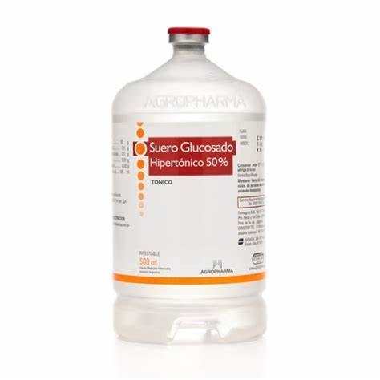

Sueros de Rehidratación Oral (SRO)
- Son soluciones que contienen una combinación de sales (sodio, potasio) y glucosa, diseñadas para reponer los líquidos y electrolitos perdidos debido a la diarrea, vómitos o deshidratación leve a moderada. Los SRO ayudan a prevenir la deshidratación y restablecer el equilibrio de líquidos en el cuerpo.
Sueros Intravenosos de Rehidratación
- Son soluciones administradas por vía intravenosa para rehidratar al paciente rápidamente, especialmente en casos de deshidratación severa debido a enfermedades, cirugía, quemaduras o pérdidas importantes de líquidos.

Sueros Vitaminados
- Estos sueros contienen vitaminas y minerales que se administran por vía intravenosa para tratar deficiencias nutricionales o para proporcionar un impulso rápido de vitaminas esenciales.
- Sueros con vitamina C: Utilizados para prevenir o tratar deficiencias de vitamina C, especialmente en casos de escorbuto o para fortalecer el sistema inmunológico.
- Sueros multivitamínicos: Suelen incluir vitaminas del complejo B, vitamina C, vitamina D, entre otras, y se usan en situaciones de fatiga, estrés o déficit nutricional.
Sueros Hipertónicos
- Son soluciones con una concentración mayor de solutos (como glucosa o sodio) que los líquidos corporales normales. Se administran para tratar condiciones específicas como el edema cerebral, la hiponatremia (bajos niveles de sodio en la sangre), o para aumentar rápidamente los niveles de glucosa en pacientes con hipoglucemia severa.
- Glucosa al 50%: Utilizada en situaciones de emergencia, como la hipoglucemia severa, para elevar rápidamente los niveles de azúcar en sangre.
- Solución salina hipertónica: Contiene una mayor concentración de cloruro de sodio que la solución salina normal y se usa en casos de hiponatremia severa.

Sueros Nutricionales (Parenterales)
- Son soluciones intravenosas que contienen una mezcla de nutrientes esenciales (glucosa, aminoácidos, lípidos, vitaminas y minerales) para pacientes que no pueden recibir nutrición por vía oral o enteral, como aquellos que se encuentran en situaciones críticas o con enfermedades graves.